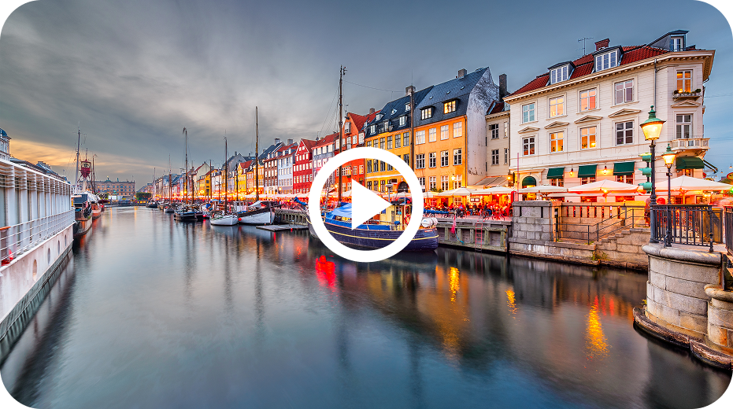

Ein stilvoller Kurzurlaub Kopenhagen in 3 Tagen: Große Erlebnisse, cleveres Ausgeben Entdecke Kopenhagen, wo historischer Charme auf modernes Design, eine lebendige Fahrradkultur und das Leben am Wasser trifft. Erlebe das Herz Skandinaviens durch gemütliche Cafés, innovative Küche und ein mühelos cooles Stadtleben. Date: 26.01.2026 Reading time: 6 min. Read: 164 Shared: 18 Wir schlendern entlang der farbenfrohen Giebelhäuser des malerischen Nyhavn, genießen die magische Atmosphäre im historischen Freizeitpark Tivoli und lassen uns vom königlichen Charme der Schlösser verzaubern.  Willkommen in Kopenhagen – einer Stadt, die historische Eleganz mühelos mit skandinavischer Gelassenheit und modernem Design verbindet. Freue dich auf eine perfekte Mischung aus weltberühmten Highlights und echtem lokalem Flair. Mache mehr aus deinen drei Tagen In nur drei Tagen kannst du eine unvergessliche Entdeckungsreise durch die dänische Hauptstadt erleben. Tag eins: Erkunde das historische Zentrum und Nyhavn. Tag zwei: Besuche ein Museum, einen Markt oder ein Viertel außerhalb des Zentrums. Tag drei: Nimm eine ruhigere Route durch lokale Cafés und entlang der Uferpromenade. Schlendere an den farbenfrohen Giebelhäusern des malerischen Nyhavn entlang und genieße die besondere Atmosphäre. Profi-Tipp Lass dich von der entspannten Fahrradkultur mitreißen und spüre die berühmte dänische Hygge in gemütlichen Kanalcafés.